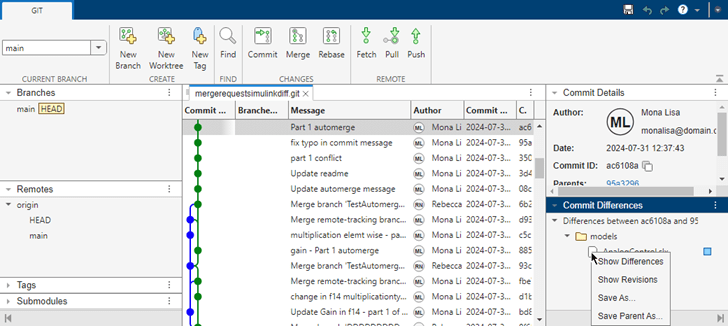
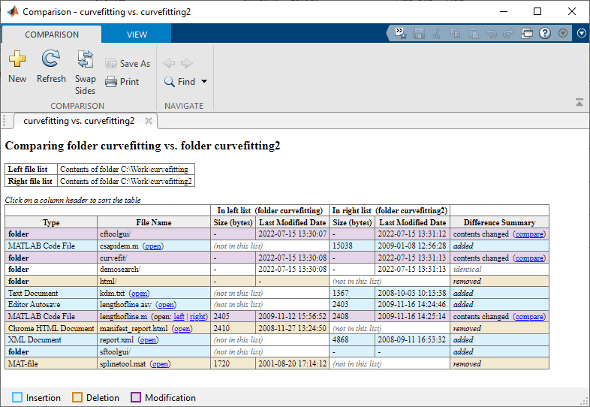
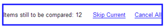
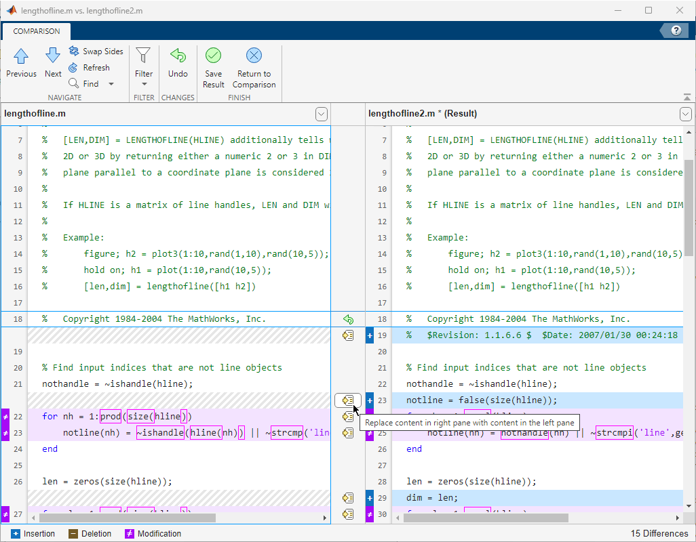
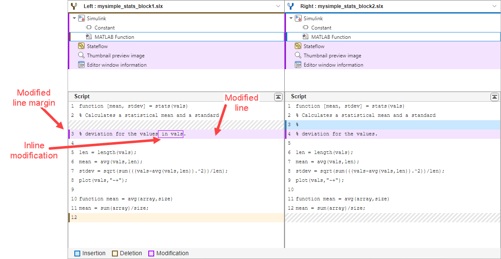

Compare Files and Folders and Merge Files
Use the Comparison Tool to display the differences between selected pairs of files or folders.
You can select files and folders on disk to compare using one of these methods:
MATLAB® editors — Open a file in the MATLAB Editor or Live Editor. On the Editor or Live Editor tab, select Compare > Compare To. Then, select the file you want to compare to.
You can also compare a file with the autosaved version or the saved version on disk. On the Editortab, select Compare > Compare to Version on Disk or Compare to Backup. If you modified your file, the Editor saves the file before comparing. The Compare to Version on Disk and Compare to Backup options are available only if the option for automatically saving changes to a file is disabled. To disable the option, go to the Home tab, and in the Environment section, click Settings. Then, select Editor/Debugger > Saving and clear Save changes upon clicking away from a file. This option is not available in the Live Editor.
Files or Project panel — To compare two files on disk, select both files. Then, right-click and select Compare Selected Files/Folders. The Comparison Tool opens both files, with the file you selected first on the left.
Alternatively, right-click a file and select Compare To. Then, select the file you want to compare to.
Command Window — Use the
visdifffunction.
For files under source control, you can open the Comparison Tool to understand differences between revisions using one of the following methods.
Files or Project panel — To compare a file to its ancestor, right-click the file and select Source Control > View Changes. To compare the file to a different revision, right-click the model file and select Show Revisions. In the Log dialog box, select the revision and click Compare to Local.
Source Control panel — To compare a file to its ancestor, in the Modified Files section, right-click the file and select View Changes. To compare the file to a different revision, right-click the file and select Show Revisions. In the Log dialog box, select the revision and click Compare to Local.
Branch Manager — To inspect changes in a file between two Git™ revisions, open the Branch Manager. Right-click and select Source Control > Branch Manager. In the Commit Differences pane, right-click a file and select Show Differences.

The Comparison Tool compares selected items using the default comparison type. To specify
a different comparison type, use the visdiff. For example, you might want to change the comparison type from
"text" to "binary" to examine differences such as
end-of-line characters in text files.
When you select folders to compare, by default, the Comparison Tool includes the content of all subfolders recursively in the comparison. To include only the folders you select and the first-level subfolders in the comparison report, in MATLAB, enter the following commands.
s=settings(); s.comparisons.folder.IncludeSubfolders.TemporaryValue=false;
Compare Folders and Zip Files
You can compare any combination of folders and ZIP files using the Comparison Tool. For example, you can compare the contents of a folder to the contents of a ZIP file. The Comparison Tool performs a file list comparison of the selected items.
Tip
Starting in R2025a, when you compare folders, MATLAB detects whether they are project root folders. The Comparison Tool opens a project definition files comparison report. For more information, see Compare MATLAB Projects.
Create a folder comparison report to:
Identify common files.
Determine whether files or folders with identical names have identical content. If such files or folders exist, you can open a detailed comparison report for the items directly from the report.
When you perform a file list comparison, a new window opens and displays the contents
of the specified lists side by side. For example, suppose that you have two folders,
curvefitting and curvefitting2, with several
differences. When you compare the two folders, the Comparison Tool displays the
resulting report.

The Comparison Tool highlights files and subfolders that do not match using the colors listed in this table.
| Highlight Color | Description |
|---|---|
| Purple | The contents of the files or folders differ. Click the compare link to investigate. |
| Blue | The file or folder only exists in the right list. |
| Yellow | The file or folder only exists in the left list. |
| None | The files or folders are identical. |
You further can explore the results using several methods:
To sort the results by name, type, size, or last modified timestamp, click the corresponding column header. For example, click the Type column header to sort by folder and file type.
To open a detailed comparison report for items with differing content, click the compare link next to the item.
To open a file in the Editor, click the open link next to a file name. If the file is present in both folders, you can click links to open the left or right version of the file.
If subfolders are very large and contain many files, analysis continues in the background. The tool displays the number of items still to be compared at the top of the report. You can click Skip Current to skip the current item or Cancel All to stop further analysis.

To save time when reviewing differences, especially when comparing many subfolders, you can filter the report. To apply a filter, on the View tab, select Filter > "
filterName".To create a new filter, on the View tab, select Filter > Add/Remove Filter. You can specify filters to ignore certain files and folders, such as backup files or files created by a revision control system. For example, to ignore all files and folders in a folder named
CVS, typeCVS/. To ignore all files in a folder namedCVS, but not ignore subfolders, typeCVS/*.To edit existing filters, double click the filter.
You can further configure and explore the comparison report using the following methods:
Swap Sides button — Switch the left side file or folder with the right side file or folder.
Refresh button — Update the results in the Comparison Tool after making changes to and saving the files in the Editor.
Find button — Find a phrase in the current display. For more information, see Find Text in Command Window or History.
Compare Text Files
You can compare and merge lines in two text files using the Comparison Tool. When you perform a text comparison, a new window opens and displays the two files side by side.
Compare Files
A user made some changes to lengthofline.m and saved the resulting file as lengthofline2.m.
Use visdiff to compare the lengthofline.m and lengthofline2.m files.
visdiff("lengthofline.m","lengthofline2.m")
The Comparison Tool displays the resulting report.

Understand Comparison Results
The Comparison Tool displays the total number of differences in the bottom-right corner of the comparison report and highlights the lines that have changed with the colors listed in this table.
If the files are identical or differ only in line break, you see a message reporting there are no differences.
| Default Highlight Color | Description |
|---|---|
| Purple | The line contains differences. |
| Dark purple | The boxed text is different. |
| Blue | The line exists only in the right file. This can happen when the line is inserted in the right file, or when it is deleted from the left file. The corresponding line in the left file is highlighted using a gray striped pattern. |
| Yellow | The line exists only in the left file. This can happen when the line is inserted in the left file, or when it is deleted from the right file. The corresponding line in the right file is highlighted using a gray striped pattern. |
The Comparison Tool attempts to match lines and detects text that is added,
deleted, or changed. For example, in the text comparison of
lengthofline.m and lengthofline2.m, the
tool determines that lengthofline2.m has a line of code that does
not exist in lengthofline.m and highlights it (line 22) in blue.
Also, the tool takes the additional line into account and determines that the line
containing the end statement in each file matches, even though
the end statement does not occur on the same line number in both
files.
To show the file details, click the expand arrow next to the file name.
In R2025a: For files under source control, the file details include source control information such as tags and branches.
To step through the results one difference at a time, use the Next and Previous buttons.
To help distinguish between functional changes and changes to indentation, you can hide white space differences. To hide differences that only involve white space characters, click Filter, and select Ignore White Space.
To save a copy of the comparison report, select Publish > Publish to HTML, Publish to Word, or Publish to PDF.
You can further configure and explore the comparison report using the following methods:
Swap Sides button — Switch the left side file or folder with the right side file or folder.
Refresh button — Update the results in the Comparison Tool after making changes to and saving the files in the Editor.
Find button — Find a phrase in the current display. For more information, see Find Text in Command Window or History.
Merge Text Files
When comparing text files, you can merge changes from one file to the other. Merging changes can be useful when resolving conflicts between different versions of files. When merging changes, you only can merge from left to right. If you want to merge into the left file, click Swap Sides before you start merging. Swapping sides reverts any merges already made and creates a new comparison report from the original files.
To begin merging, in the Comparison Tool toolstrip, click Merge
Mode. Then, to replace content from the right pane with content from the
left pane, click the Replace Content button  button located next to the line you want to merge.
Alternatively, select a difference and, in the Comparison Tool toolstrip, click
Replace Content.
button located next to the line you want to merge.
Alternatively, select a difference and, in the Comparison Tool toolstrip, click
Replace Content.
The right pane contains the merged result. An asterisk next to the merged file name in
the right pane (lengthofline2.m *) indicates that the file contains
unsaved changes.
To undo a replacement, click the Undo button between the modified lines or in the toolstrip. To revert all merges and start again, in the Comparison Tool toolstrip, click Refresh. You can also use Refresh to update the comparison report after making changes to and saving the files. Refreshing discards all unsaved merged changes.
To save your changes and return to the comparison report, in the toolstrip, click Save Result button. To return to the comparison report without saving changes, click Return to Comparison.

Compare Binary Files
You can compare two binary files, such as DLL files or MEX files, using the Comparison Tool. You also can perform a binary comparison on any two selected files, instead of the default comparison.
To compare any two files using a binary comparison, in the Comparison
type menu, select Binary comparison. When you
perform a binary comparison, a new window opens and indicates whether the two files are
identical or different. If the files are different, click the Show
Details link to view the binary files and the byte offset of the first
difference.
Compare Other File Types
You can use the Comparison Tool to compare other file types:
Live Code — Compare and merge the code and text in two live code files. For more information, see Compare and Merge Live Scripts and Functions.
Apps — Compare and merge the code in two apps. For more information, see Compare and Merge Apps.
MAT-Files — Compare and merge variables in two MAT-files. For more information, see Compare and Merge MAT-files.
Simulink® Models — If you have Simulink, you can compare and merge Simulink models. For information, see Model Comparison (Simulink).
MLDATX test files — Compare and merge Simulink Test™ test cases in MLDATX test files. For information, see Compare and Merge Test Files (Simulink Test)
Comparison Settings
You can customize the colors that the Comparison Tool uses in the Comparison settings. To change the Comparison settings, on the Home tab, in the Environment section, click Settings. Then, select MATLAB > Comparison.
Color settings apply to all comparison and merge types. After changing the colors, any open comparison and merge reports reflect the updated colors. MATLAB remembers your choices for future sessions. You can define a set of colors per desktop theme. To restore default colors, click Restore Default Colors.
This table provides a summary of the colors that the comparison and merge reports use.
| Color of report item | Description |
|---|---|
| Modified/Theirs | In the comparison report, the color is associated to a modified line or item. |
| In the three-way merge report, the color is associated to a change made by the Theirs revision. | |
| Deleted/Base | In the comparison report, the color is associated to a deleted line or item. |
| In the two-way merge report, the color is associated to a change made by the Left revision. | |
| In the three-way merge report, the color is associated to a change that exists in the Base revision. | |
| Inserted/Mine | In the comparison report, the color is associated to an added line or item. |
| In the two-way merge report, the color is associated to a change made by the Right revision. | |
| In the three-way merge report, the color is associated to a change made by the Mine revision. | |
| Target | In the two-way and three-way merge reports, the color is associated to a change made in the Target pane. |
| Conflict | In the three-way merge reports, the color is associated to a line that contains conflicts. |
| Modified/Theirs Margin | In the comparison report, the color is associated to the margin of a modified line or item. |
| In the three-way merge report, the color is associated to the margin of a change made by the Theirs revision. | |
| Deleted/Base Margin | In the comparison report, the color is associated to the margin of a deleted line or item. |
| In the two-way merge report, the color is associated to the margin of a change made by the Left revision. | |
| In the three-way merge report, the color is associated to the margin of a change that exists in the Base revision. | |
| Inserted/Mine Margin | In the comparison report, the color is associated to the margin of an added line or item. |
| In the two-way merge report, the color is associated to the margin of a change made by the Right revision. | |
| In the three-way merge report, the color is associated to the margin of a change made by the Mine revision. | |
| Target Margin | In the two-way and three-way merge reports, the color is associated to the margin of a change made in the Target pane. |
| Conflict Margin | In the three-way merge reports, the color is associated to the margin of a line that contains conflicts. |
| Inline Modification | In the comparison report, the color is associated to a inline modification. |
Note
The margin of a node in the report may display more than one color. For example, when a node has both the blue and purple colors, it indicates that the detailed comparison of this node contains both added and modified items. To open the details pane, select the node.
The following illustration shows a side by side comparison example. The margin of the
parent node MATLAB Function, on the right, is colored in both dark purple
and dark blue to indicate both modified and added items in the detailed
Script comparison below. In the detailed
Script comparison, the modified lines and items are colored in
light purple and the corresponding margins are colored in dark purple. The added line is
colored in light blue and the corresponding margin is colored in dark blue. The deleted line
is colored in light orange and the corresponding margin is colored in brown.

For more information about the terminology used in the Comparison and Merge tools, see Terminology in Comparison Report (Simulink) and Terminology in Three-Way Merge Report (Simulink).